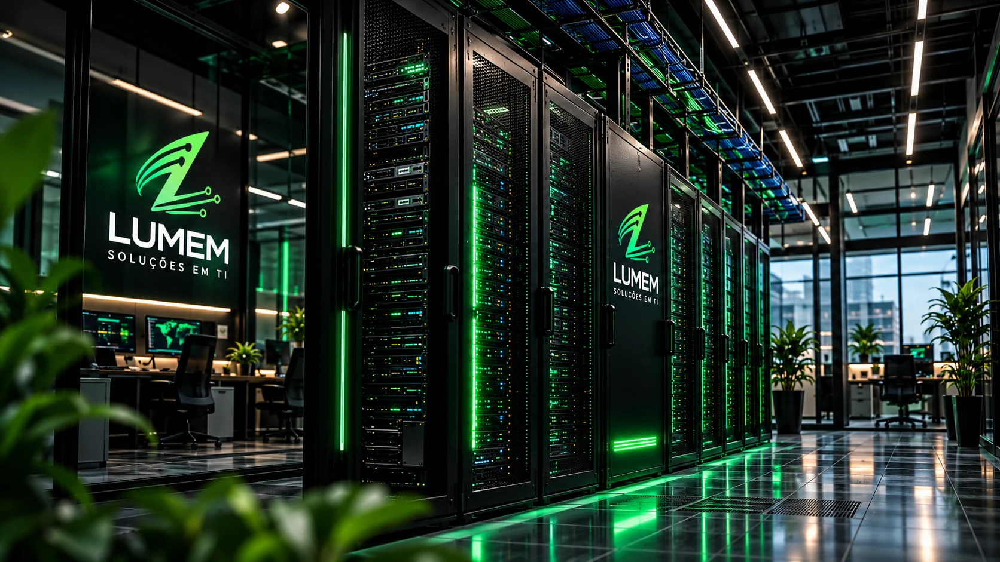
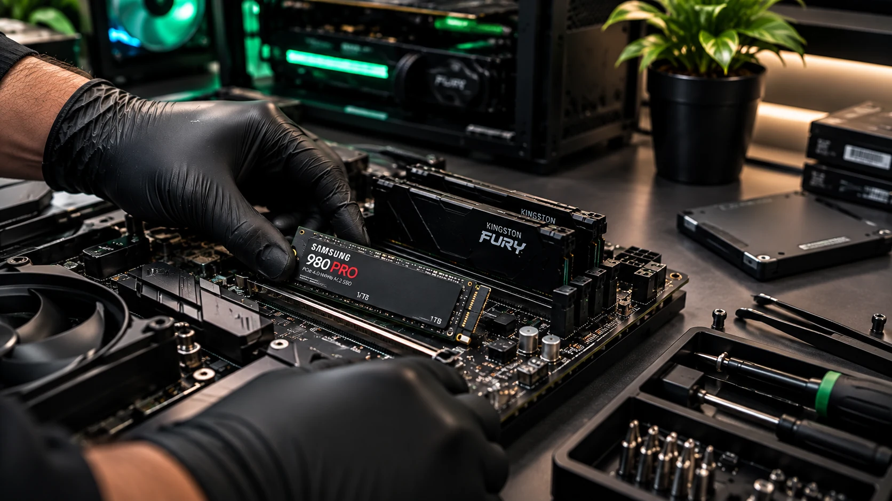

Equipamentos em ordem
Manutenção, configuração e melhorias para reduzir falhas no dia a dia.

LUMEM · SOLUÇÕES EM TI
Soluções em tecnologia para pessoas e empresas que precisam de desempenho, segurança e tranquilidade. Cuidamos de computadores, redes e infraestrutura com atendimento claro e soluções pensadas para cada necessidade.
COMO PODEMOS AJUDAR
Da manutenção de um notebook à rotina de TI de uma empresa, entendemos sua necessidade e indicamos o caminho certo, com clareza do início ao fim.

MAIS VIDA ÚTIL PARA SEU EQUIPAMENTO
Um diagnóstico bem feito ajuda a entender se vale a pena fazer upgrade, reparar ou substituir o equipamento. Você recebe uma explicação clara antes de decidir.
Avaliar meu equipamentoSOBRE A LUMEM
A LUMEM Soluções em TI atende pessoas e empresas com manutenção de computadores e notebooks, upgrades, configuração de sistemas, redes e infraestrutura. Nosso objetivo é resolver problemas com clareza, cuidado e soluções adequadas para cada necessidade.
Meu nome é Taysson Rodolfo e estou à frente da LUMEM. Tenho mais de 10 anos de experiência em tecnologia, com atuação em suporte técnico, manutenção de hardware e software, redes e infraestrutura de TI. Também sigo aprofundando meus conhecimentos em Segurança da Informação para ajudar clientes a usar a tecnologia com mais confiança.
TransparênciaVocê entende o que será feito e por quê.
Solução adequadaRecomendação alinhada à sua necessidade.
Contato diretoConversa simples com quem entende do assunto.
SOLUÇÕES PARA EMPRESAS
A LUMEM ajuda a manter computadores, rede e ambiente de trabalho funcionando. Atendimento próximo, explicação clara e soluções alinhadas à realidade da sua operação.
Conversar sobre a TI da minha empresaConversa inicial sem compromisso. Vamos entender o que sua empresa precisa.
Manutenção, configuração e melhorias para reduzir falhas no dia a dia.
Configuração e diagnóstico de Wi-Fi, rede local e infraestrutura.
Você entende o problema, as opções e o próximo passo antes de decidir.
Atendimento presencial em Cachoeirinha e região metropolitana / Suporte remoto no Brasil e no mundo
PRÓXIMO PASSO
Conte o que você precisa. A gente conversa sem compromisso e entende qual é o melhor caminho.
Cachoeirinha e Região Metropolitana de Porto Alegre
Suporte remoto no Brasil e no mundo